History & Society Worksheets
507 printable History & Society worksheets (PDF) with answer keys: reading comprehension passages, reading trails and more – no prep, filter by grade.
507 resources
Grade
By grade: 5th Grade · 9th Grade

World War I Reading Comprehension Passages | History Scavenger Hunt 8-9
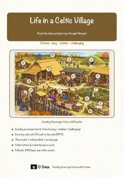
Celtic Village Reading Comprehension Passages | History Scavenger Hunt 5-6
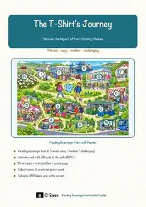
T-Shirt Reading Comprehension Passages | Environment Scavenger Hunt 7-8

Money Reading Comprehension Passages | Economics Scavenger Hunt 3-4
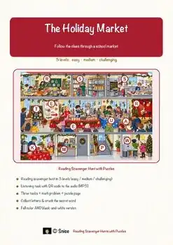
Holiday Market Reading Comprehension Passages | Economics Scavenger Hunt 5-6
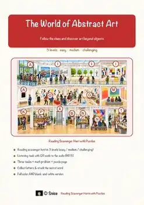
The World of Abstract Art Reading Comprehension | Reading Scavenger Hunt 7-8
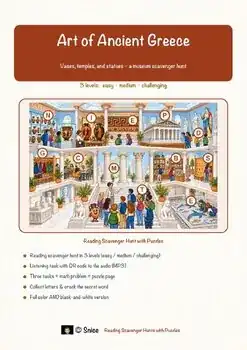
Ancient Greece Reading Scavenger Hunt | Greek Art & Architecture Escape Activity
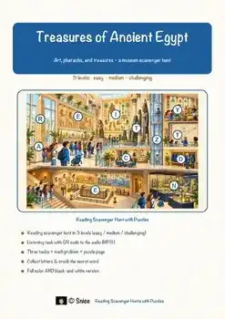
Ancient Egypt Reading Scavenger Hunt | Egyptian Art & History Escape Activity

Arte antiguo y altomedieval

Art After 1945 BUNDLE | Art History Fact Sheets with Answer Keys

Modern Art Movements BUNDLE | Art History Fact Sheets with Answer Keys

19th-Century Art Movements BUNDLE | Art History Fact Sheets with Answer Keys

Romanesque to Biedermeier Art BUNDLE | Art History Fact Sheets with Answer Keys

Histoire de France – French Reading BUNDLE | Gaul to Versailles Fiches

Black History Month Reading Comprehension FREE Sampler | Cloze & Word Search

Antica Roma – Italian Reading Comprehension BUNDLE | Ancient Rome Schede
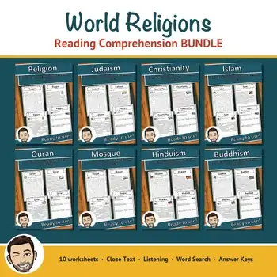
World Religions Reading Comprehension BUNDLE | Judaism, Islam, Hinduism
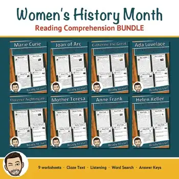
Women's History Month Reading Comprehension BUNDLE | Famous Women
Fairy Tales Reading Comprehension BUNDLE | Grimm, Andersen & Fables
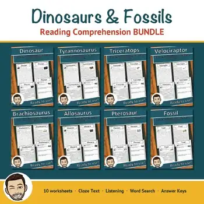
Dinosaurs Reading Comprehension BUNDLE | T. Rex, Fossils & Paleontology
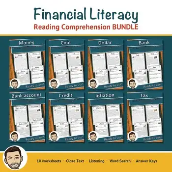
Financial Literacy Reading Comprehension BUNDLE | Money, Banks & Inflation
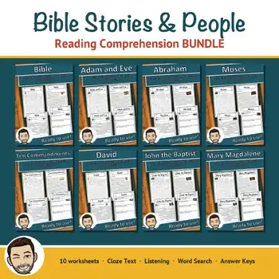
Bible Stories Reading Comprehension BUNDLE | Adam and Eve to the Apostles
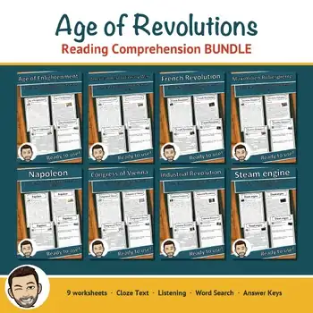
Age of Revolutions Reading Comprehension BUNDLE | Enlightenment to Industry
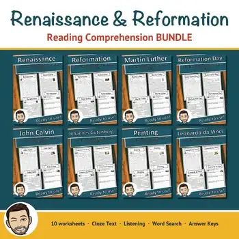
Renaissance & Reformation Reading BUNDLE | Luther, Gutenberg & da Vinci
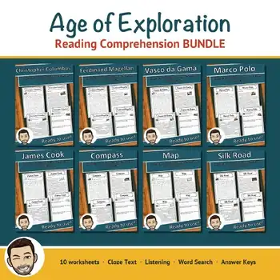
Age of Exploration Reading Comprehension BUNDLE | Columbus & Magellan
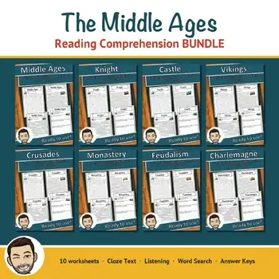
Middle Ages Reading Comprehension BUNDLE | Knights, Castles & Vikings
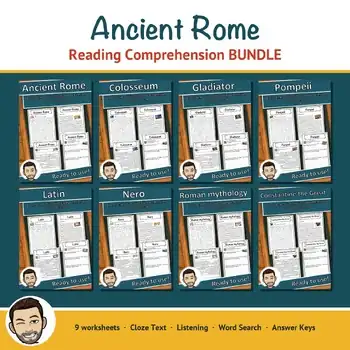
Ancient Rome Reading Comprehension BUNDLE | Colosseum, Gladiators & Pompeii
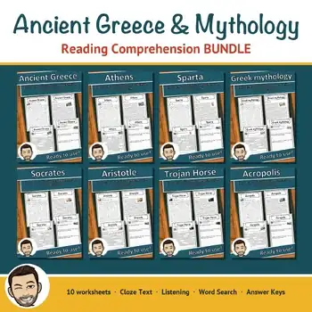
Ancient Greece Reading Comprehension BUNDLE | Athens, Sparta & Greek Myths
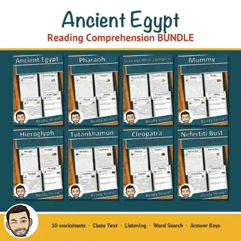
Ancient Egypt Reading Comprehension BUNDLE | Pharaohs, Pyramids & Mummies
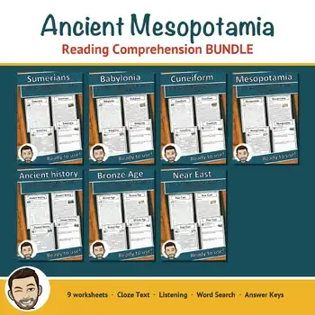
Ancient Mesopotamia Reading Comprehension BUNDLE | Sumerians & Cuneiform
Presidents' Day Reading Comprehension BUNDLE | Constitution & Government
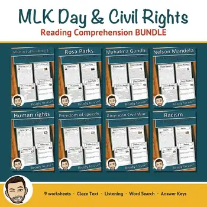
MLK Day Reading Comprehension BUNDLE | Civil Rights & Human Rights Heroes
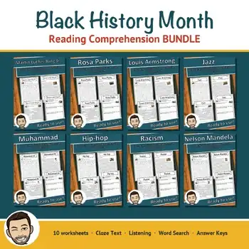
Black History Month Reading Comprehension BUNDLE | Jazz, Sports & Civil Rights

FREE Winter Reading Comprehension Passages – Snowman, Hibernation & Polar Bears
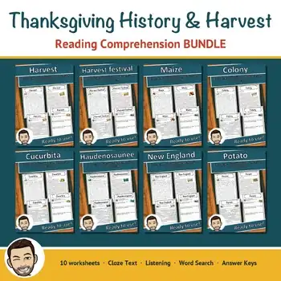
Thanksgiving Reading Comprehension BUNDLE | Colonies, Corn & Harvest
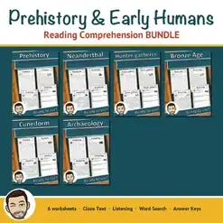
Prehistory Reading Comprehension BUNDLE | Stone Age to Bronze Age
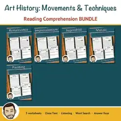
Art History Reading Comprehension BUNDLE | Renaissance, Impressionism
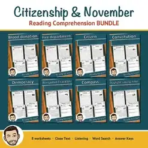
Citizenship Worksheets Bundle | Grades 5-8 | Constitution & Democracy Reading
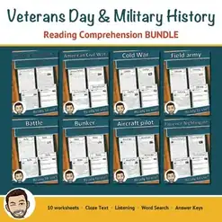
Veterans Day Worksheets Bundle | Grades 5-8 | November Reading Comprehension
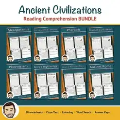
Ancient Civilizations Reading Comprehension BUNDLE | Egypt, Greece & Rome
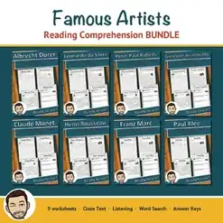
Famous Artists Reading Comprehension BUNDLE | Cloze & Word Search

Licantropo – Italian Reading Comprehension Worksheet (Scheda): Cloze & Listening

La bella addormentata – Italian Reading: Cloze, Listening & Word Search
Invasioni barbariche – Italian Reading: Cloze, Listening & Word Search
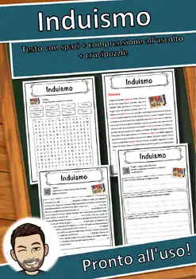
Induismo – Italian Reading: Cloze Text, Listening Task & Word Search (Scheda)
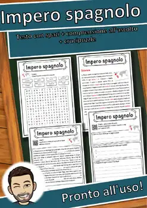
Impero spagnolo – Italian Reading: Cloze, Listening & Word Search
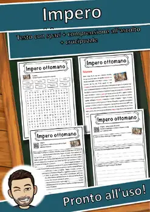
Impero ottomano – Italian Reading: Cloze, Listening & Word Search
Impero coloniale tedesco – Italian Reading: Cloze, Listening & Word Search
No resources found – try a different search term or filter.